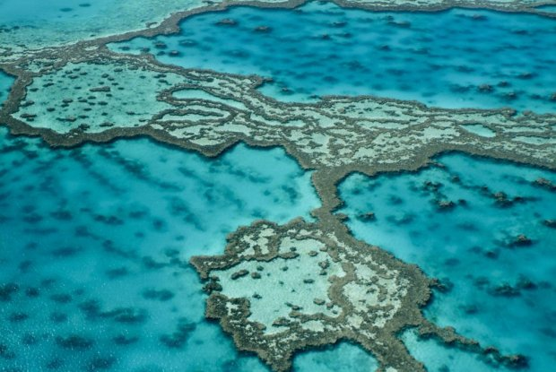

1.Tasmania, Australia
Oddzielona od kontynentu równie sławną, jak i groźną Cieśniną Bassa, jest prawdziwym rajem dla miłośników pierwotnej natury, pięknych górskich krajobrazów i wypoczynku z nutą adrenaliny: począwszy od raftingu, poprzez nurkowanie i eksplorację jaskiń, a skończywszy na kajakach morskich, rowerach górskich i szaleństwach pojazdami z napędem na cztery koła.
Wielka Rafa Koralowa, Australia
Pełna przeróżnych "naj": największa na świecie rafa, największa struktura stworzona przez organizmy żywe, wreszcie najpopularniejsze miejsce do nurkowania. Żyje tu ponad 1,5 tys. gatunków ryb i 400 gatunków koralowców. To jedno z najczęściej odwiedzanych miejsc w Australii liczy sobie ponad 20 mln lat..

3.Great Ocean Road, Australia
Wspaniała, licząca 243 km widokowa trasa samochodowa ciągnąca się wzdłuż południowego wybrzeża stanu Wiktoria. Dociera do najbardziej spektakularnych miejsc, w tym słynnych Dwunastu Apostołów czy London Arch. Dla mniej leniwych udostępniono Great Ocean Walk - liczącą 104 km wersję pieszą trasy.